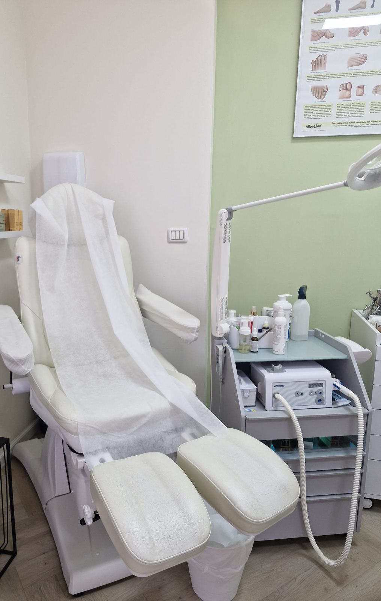
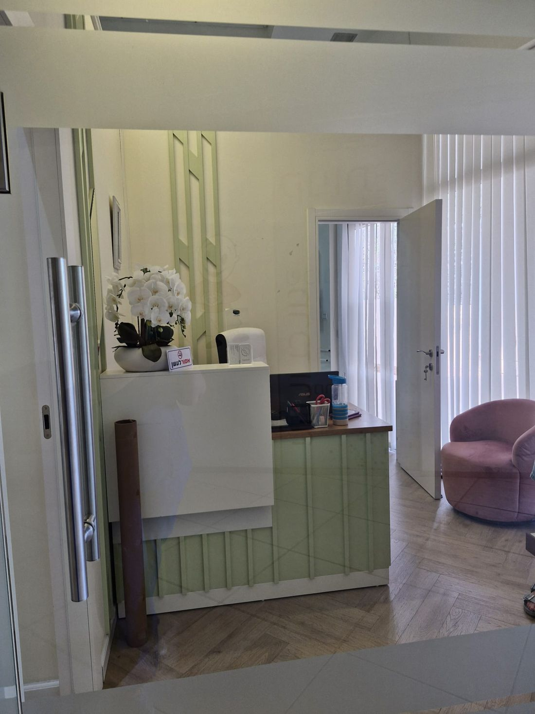

ליליה.Liliya.כף הרגל והציפורן.Feet & nails.
המרכז לבריאות וטיפוח כף הרגל והציפורן של ליליה: פדיקור רפואי, פדיקור וטיפול בציפורניים, ברחוב ורדיה 12 בחיפה.Liliya’s centre for foot health and nail care: medical pedicure, pedicure and nail treatment, at 12 Vardia Street, Haifa.

ורדיה 12, חיפה.12 Vardia St, Haifa.
הקליניקהThe clinic
“הקליניקה נעימה, מטופחת ונקייה.”
“The clinic is pleasant, well kept and clean.”
שעות פתיחהOpening hours
ראשון עד חמישי 9:00–18:00, שישי 9:00–14:00, שבת סגור.Sunday to Thursday 9:00–18:00, Friday 9:00–14:00, closed on Saturday.

- מה ליליה עושהWhat Liliya does
פדיקור רפואיMedical pedicure
טיפול בבעיות של כף הרגל והציפורן.Care for problems of the foot and the nail.
פדיקורPedicure
טיפוח רגיל לכף הרגל, לצד הרפואי.Everyday foot care, alongside the medical work.
ציפורן עם פטרתFungal nails
טיפול שנמשך לאורך זמן, בסבלנות.A treatment that takes time, and patience.
אבחון והמלצותDiagnosis & advice
מתחילים באבחון, וממשיכים בהמלצות להמשך.It starts with a diagnosis and goes on to advice for what comes next.
הודעה לליליה.A note to Liliya.
מסמנים מה מציק, בוחרים טיפול ושעה, וההודעה נכתבת לבד.Mark what bothers you, choose a treatment and a time, and the message writes itself.
- מסמנים על כף הרגלMark it on the foot
- בוחרים טיפול ושעהChoose treatment and time
- שולחים בוואטסאפSend on WhatsApp
“ליליההצילהליציפורןעםפטרת”
“Liliyasavedmyfungaltoenail”
4.4, מ-40 ביקורות.4.4, from 40 reviews.
Googleלכל הביקורותRead them allלליליה ידע רחב ומעמיק בכל הקשור לתחומי הפדיקור הרפואי והרגיל. היא משתמשת רק בכלים סטריליים והקליניקה נעימה, מטופחת ונקייה.
Liliya has broad, deep knowledge of medical and regular pedicure. She uses only sterile tools, and the clinic is pleasant, well kept and clean.
מקצועיות כבר משלב האבחון, והמשך בטיפול. ובהמלצות להמשך טיפול. עבודה בעדינות, יחס חם ונעים. ואיזה הקלה על הכאבים. תודה רבה על הטיפול המסור
Professional from the diagnosis on, through the treatment and the advice for further care. Gentle work, a warm and pleasant manner. And what relief from the pain. Thank you so much for the devoted care.
ממליצה בחום על ליליה. שירות מצוין ומקצועי מאוד.
I warmly recommend Liliya. Excellent, very professional service.
ליליה מקפידה להתעדכן כל הזמן בהשתלמויות מקצועיות ובנושאים חדשים, המקום מצוחצח והצוות שלה מקצועי באופן שלא נתקלתי בו!
Liliya keeps up all the time with professional courses and new topics; the place is spotless and her team is professional like nowhere I’ve seen.
שאלות קצרות.Short questions.
איפה הקליניקה?Where is the clinic?
ברחוב ורדיה 12 בחיפה.At 12 Vardia Street, Haifa.
מה שעות הפעילות?What are the opening hours?
ראשון עד חמישי 9:00–18:00, שישי 9:00–14:00. בשבת סגור.Sunday to Thursday 9:00–18:00, Friday 9:00–14:00. Closed on Saturday.
יש גם פדיקור רגיל?Is there a regular pedicure too?
כן, לצד הפדיקור הרפואי.Yes, alongside the medical pedicure.
ליליה מטפלת בציפורן עם פטרת?Does Liliya treat fungal nails?
כן. אפשר לכתוב לה בוואטסאפ ולספר על הציפורן.Yes. You can write to her on WhatsApp about your nail.
איך קובעים תור?How do I book?
בוואטסאפ או בטלפון 052-470-7710.On WhatsApp or by phone at 052-470-7710.
ליליהLiliya
ורדיה 1212 Vardia StחיפהHaifa
א׳–ה׳ 9–18 · ו׳ 9–14Sun–Thu 9–18 · Fri 9–14
052-470-7710 שלוםHelloכתבו לליליה בוואטסאפWrite to Liliya on WhatsApp